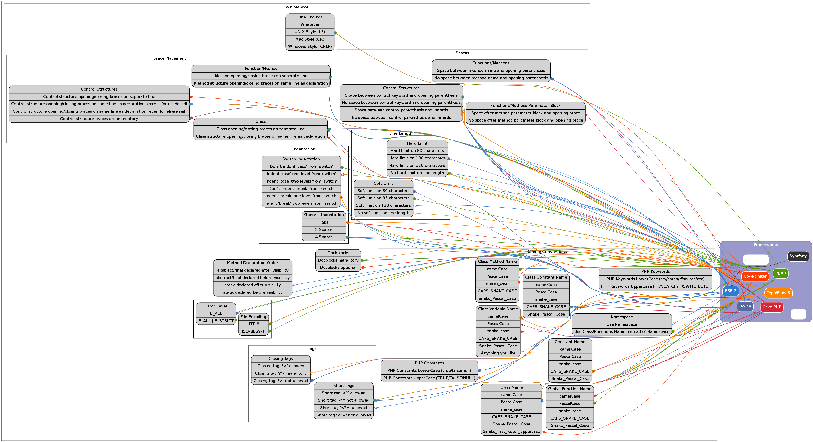

The following coding standards have been chosen be represented in this project.
If you would like see the coding standards of another project included, you can either fork this project on github and do the work yourself or ask me to do the work for you by opening a ticket on github.
